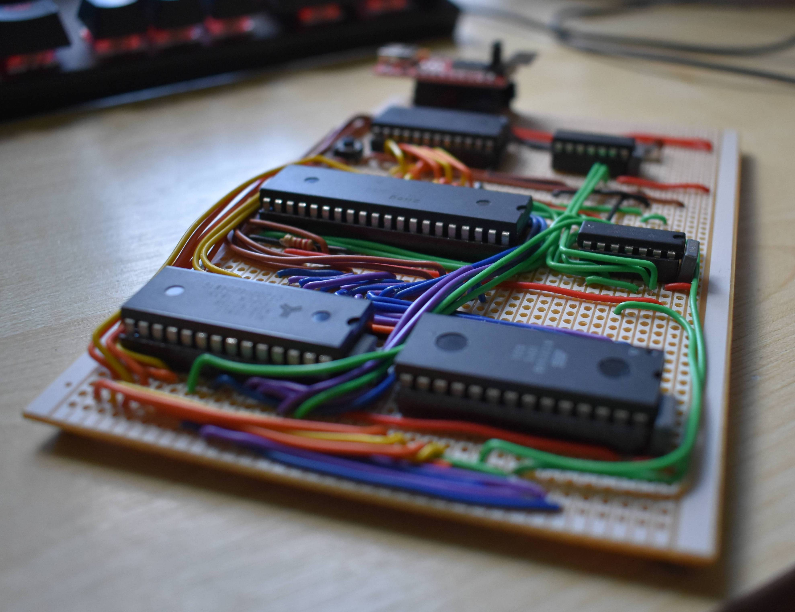

<div class="modal fade" id="aboutModal" tabindex="-1" aria-labelledby="aboutModal" aria-hidden="true">
    <div class="modal-dialog">
        <div class="modal-content">
            <div class="modal-header">
                <h5 class="modal-title" id="aboutModalLabel">About</h5>
                <button type="button" class="close" data-dismiss="modal" aria-label="Close">
                    <span aria-hidden="true">&times;</span>
                </button>
            </div>
            <div class="modal-body">
                
                <p>EMU Code avalaible on <a href="https://github.com/yarbsemaj/z80-sbc-emu">Github</a></p>
                <h4>ROMS</h4>
                <p>
                    BIOS/Monitor <a href="https://github.com/yarbsemaj/Z80-Monitor">Github</a><br>
                    Pacman <a href="https://github.com/yarbsemaj/z80-Pacman">Github</a><br>
                    Snake <a href="https://github.com/yarbsemaj/Z80-Snake">Github</a><br>
                    Minesweeper <a href="https://github.com/yarbsemaj/Z80-MineSweeper">Github</a><br>
                </p>
                <h4>Acknowledgements</h4>
                <p>EMU Forked from <a href="http://umlautllama.com/projects/rc2014/">here</a>
                    <br>
                    Z80 Core <a href="https://github.com/DrGoldfire/Z80.js">Github</a></p>
            </div>
        </div>
    </div>
</div>